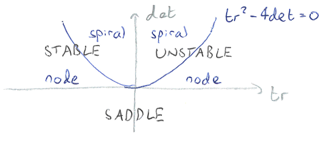
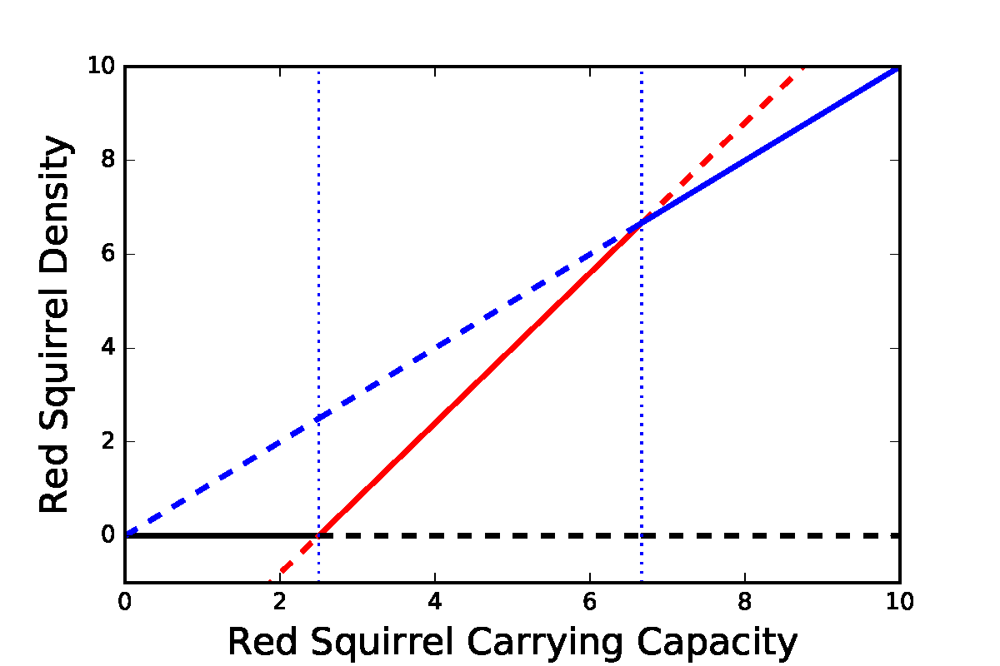

3 - Competition continued ¶
Linear stability analysis¶
Beyond this graphical method it would obviously be useful if we can formally characterise these equilibria in some way, and in particular assess when each will be an attracting end-point of the dynamics (the equilibrium is stable) and when not (the equilibrium is unstable). Much like we did with the logistic model, we can assess the local stability of steady states of a system by linearising around the equilibrium and finding the eigenvalues by studying the Jacobian matrix. Let us suppose that \(dR/dt=f(R,G)\) and \(dG/dt=g(R,G)\). Then the Jacobian matrix is made up of the partial derivatives of \(f\) and \(g\),
taken at the equilibrium values of \(R\) and \(G\). We can then use this Jacobian to find the eigenvalues at an equilibrium, which will tell us whether that point is stable or unstable. In particular, if,
\(\lambda_1<0\) and \(\lambda_2<0\), the equilibrium is stable;
\(\lambda_1>0\) and \(\lambda_2>0\), the equilibrium is unstable;
\(\lambda_1<0\) and \(\lambda_2>0\), the equilibrium is a saddle.
Since we are dealing with a 2x2 matrix, and since we only really care about the signs of the eigenvalues, we can usually determine stability just by finding the trace and determinant of our matrix:
\(tr(J) = \frac{\partial f}{\partial R} + \frac{\partial g}{\partial G}\),
\(det(J) = \left[\frac{\partial f}{\partial R}\right].\left[\frac{\partial g}{\partial G}\right]-\left[\frac{\partial f}{\partial G}\right].\left[\frac{\partial g}{\partial R}\right].\)
The signs of these two quantities combine to tell us about the stability of the equilibrium, which is best seen through the following diagram:
Figure: Stability of an equilibrium using the trace and determinant of the Jacobian.
It is also useful to note that \(tr(J)=\lambda_1+\lambda_2\) and \(det(J)=\lambda_1\lambda_2\). Also, note that for a 2x2 Jacobian, if one of the off-diagonal entries is zero, the eigenvalues are simply the two entries in the main-diagonal.
Let’s write down the generic Jacobian for our system,
We can use the information from the Jacobians to derive the eigenvalues at each equilibria explicitly. In particular we can use the signs of the trace and determinant to establish the stability of each equilibrium.
The extinction equilibrium
At \((0,0)\), the Jacobian is just
which has \(T=a+c>0\), \(D=ac>0\) and \(T^2-4D = (a-c)^2 >0\), where \(T\) and \(D\) are the trace and determinant of the matrix. Thus \((0,0)\) is always an unstable node.
The two single-species equilibria
At \((a,0)\), we have
which has \(T=-c+(a-bc)\), \(D=-c(a-bc)\) and \(T^2-4D = [c+(a-bc)]^2 >0\). Thus, in cases (a) and (c), when \(a-bc>0\), we have \(D<0\) and so it is a saddle point. In cases (b) and (d), when \(a-bc<0\), we have \(D>0\) and \(T<0\), and so it is a stable node. These findings are in accord with the direction fields and our previous interpretation of the behaviour of the system.
Using a similar argument (or just the symmetry of the equations), we can show that \((0,c)\) is a stable node in cases (a) and (d), and a saddle point in cases (b) and (c).
The coexistence equilibrium
For the final equilibrium, we could try and calculate the equilibrium densities explicitly, but it is no point making unnecessary work for ourselves. Instead, note that it lies at the intersection of the two off-axis nullclines. Substituting the nullcline equations into \(\mathbf{J}\), we get
which has \(T=-(R_*+G_*)<0\), \(D=(1-bd)R_*G_*\) and \(T^2-4D=(R_*-G_*)^2+4bdR_*G_*>0\). Everything hinges on the sign of \(D=(1-bd)R_*G_*\).
In case (c), we have \(a-bc>0\) and \(c-ad>0\). Putting these together we find we have \(a > bad\) and so \(1>bd\). Therefore \(D>0\) and C is a stable node.
In contrast, in case (d) we have \(a<bc\) and \(c<ad\), meaning \(a < bad\) and so \(1<bd\). Therefore \(D<0\) and C is a saddle point.
Have a go
Use the compeititon model python code to explore the competiiton model. See if you can choose parameter values to produce each of the 4 key outcomes.
A bifurcation diagram¶
Transcritical bifurcations in the competition model. Parameter values: \(b=0.5\), \(c=5\), \(d=0.75\).
We can also plot a bifurcation diagram of the system. This is slightly more complicated since we now have two variables and multiple parameters, but we just focus on how one parameter impacts one variable. Here we actually see three different transcritical bifurcations at different points as we vary the Red Squirrel carrying capacity, \(a\).
Note what we have achieved here: we have mapped out all possible behaviours of the system without having to specify exactly what the values of the parameters are, and without having to calculate the location of the equilibrium point.
3 key points¶
Linear stability analysis allows us to classify the behaviour of a system near an equilibrium.
Competing species can coexist with each other in the long term, provided the effects of interspecific competition are quite weak (in fact, if we assume equal carrying capacities, \(a=c\), we require both \(b<1\) and \(d<1\)).
Very often there will be competitive exclusion, where only one species can survive in the long term, whenever the effects of inter-specific competition is quite strong.